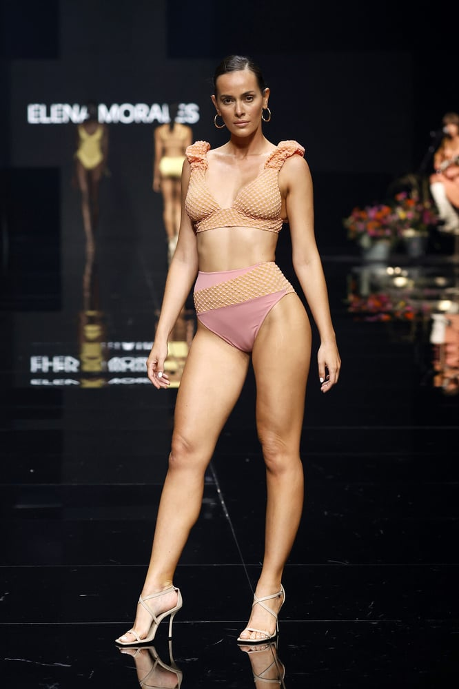
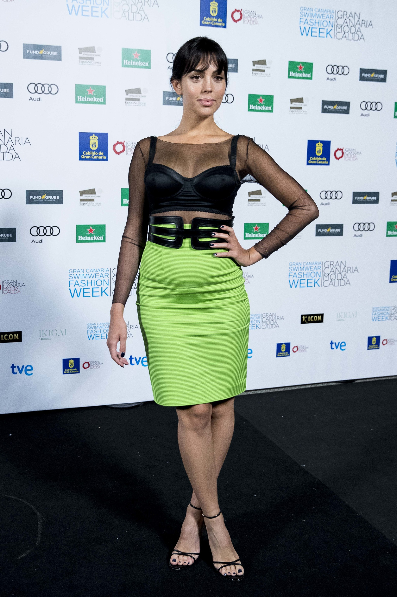
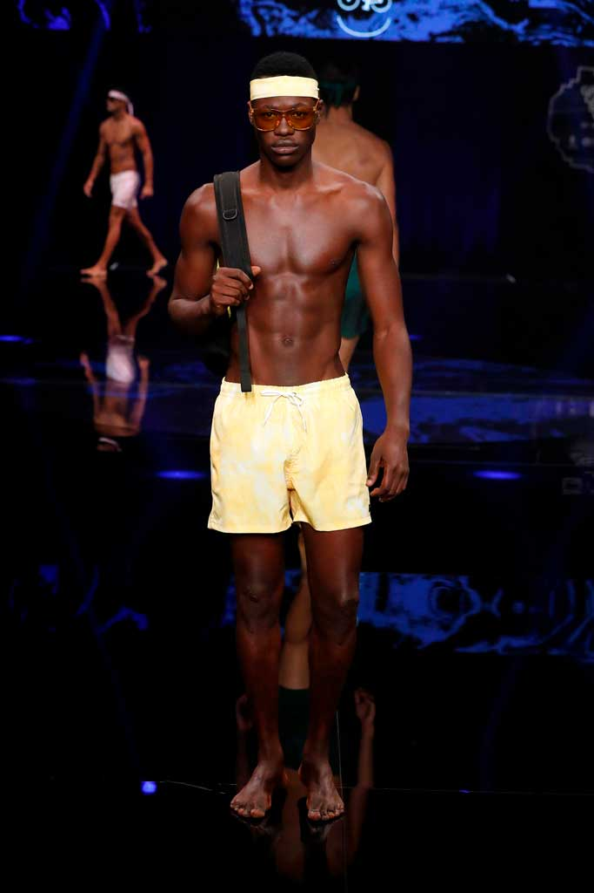

Tiendas de moda innovadoras en Canarias
En este artículo hablaremos de las tiendas de moda más innovadoras de las islas.
Leer más

MasQModa Canarias
Entrevista a Giovanni Déniz y Josué Quevedo, fundadores en 2011 de MasQModa Canarias.
Leer más


Gran Canaria Moda Cálida
Gran Canaria Moda Cálida es un programa de actuación en el sector textil de la moda en la isla.
Creado e impulsado por la Consejería de Área de Industria, Comercio y Artesanía del Cabildo de Gran Canaria..
La moda es, para esta Institución, un sector creciente y con posibilidades de expansión industrial y Gran Canaria Moda Cálida se convierte en el marco en el que diseñadores y empresas apoyan sus proyectos
Leer más

Gran Canaria Swin Weak
Gran Canaria Swim Week es la única pasarela profesional de moda de baño de Europa.
Leer másModa hecha en las islas Canarias: singular y artesanal
Aunque su producto más identificable se centra en las “arcadinas”...
Leer más